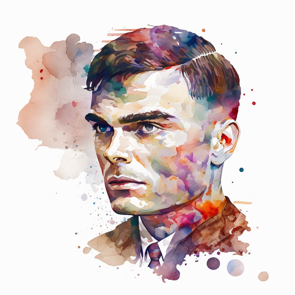

La inteligencia artificial surge definitivamente a partir de algunos trabajos publicados en la década de 1940 que no tuvieron gran repercusión, pero a partir del influyente trabajo en 1950 de Alan Turing, matemático británico, se abre una nueva disciplina de las ciencias de la información. Si bien las ideas esenciales se remontan a la lógica, algoritmos de los griegos y a las matemáticas de los árabes, el concepto de obtener razonamiento artificial aparece en el siglo XIV. A finales del siglo XIX se obtienen lógicas formales suficientemente poderosas y, a mediados del siglo XX, se obtienen máquinas capaces de hacer uso de tales lógicas y algoritmos de solución.
En su histórico artículo de 1950, Turing propuso que la pregunta «¿puede pensar una máquina?» era demasiado filosófica para tener valor y, para hacerlo más concreto, propuso un «juego de imitación», la prueba de Turing, en la que intervienen dos personas y una computadora. Una persona, el interrogador, se sienta en una sala y teclea preguntas en la terminal de una computadora. Cuando aparecen las respuestas en la terminal, el interrogador intenta determinar si fueron hechas por otra persona o por una computadora. Si actúa de manera inteligente, según Turing es inteligente. Turing, señaló que una máquina podría fracasar y aún ser inteligente. Aun así creía que las máquinas podrían superar la prueba a finales del siglo XX. De todas maneras esta prueba no tuvo el valor práctico que se esperaba, aunque sus repercusiones teóricas son fundamentales. El enfoque de Turing de ver a la inteligencia artificial como una imitación del comportamiento humano no fue tan práctico a lo largo del tiempo y el enfoque dominante ha sido el del comportamiento racional, de manera similar, en el campo de la aeronáutica se dejó de lado el enfoque de tratar de imitar a los pájaros y se tomó el enfoque de comprender las reglas de aerodinámica. Aunque desde luego, el enfoque del comportamiento humano y el del pensamiento humano siguen siendo estudiados por las ciencias cognitivas y continúan aportando interesantes resultados a la inteligencia artificial, y viceversa.